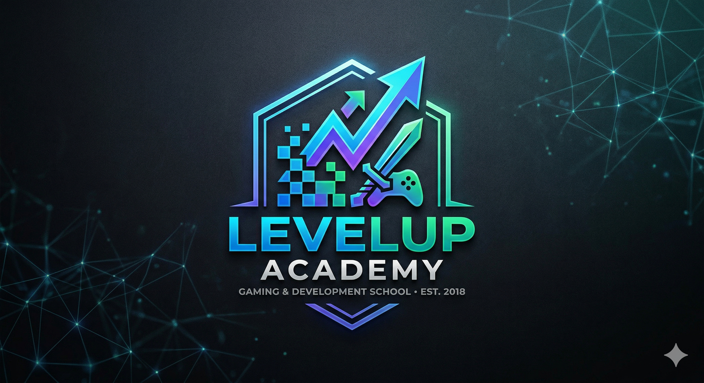
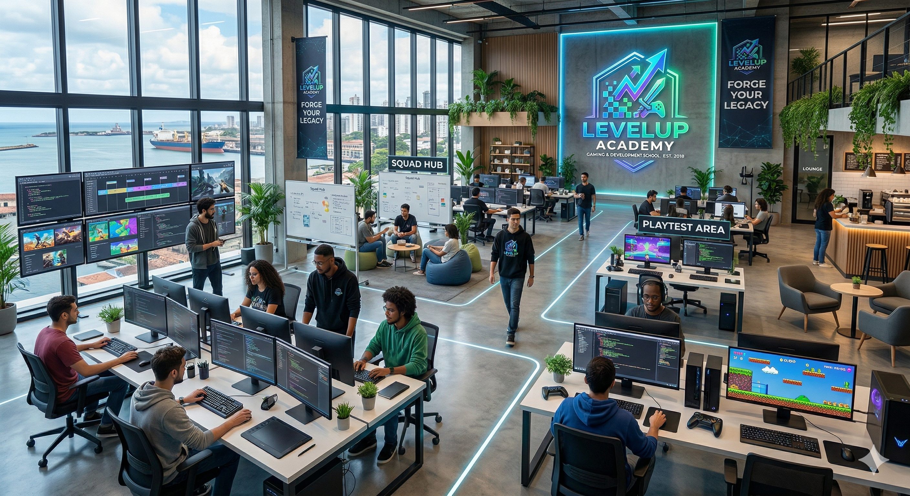
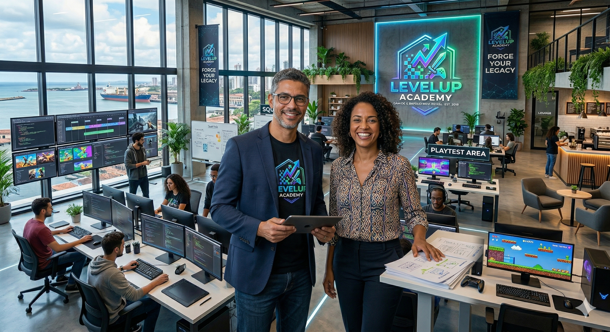

Fundada em 2018, a LevelUp Academy nasceu com a missão de democratizar o acesso ao ensino de alta tecnologia. O que começou como um pequeno projeto de tutoria em São Paulo rapidamente se expandiu, e hoje somos uma das principais referências globais em educação para a indústria de games. Com uma metodologia prática e foco no mercado de trabalho, já ajudamos milhares de alunos a tirarem seus projetos do papel e ingressarem em grandes estúdios internacionais.
Atualmente, nossa plataforma está presente em mais de 15 países, oferecendo conteúdos localizados em diversos idiomas para atender a uma comunidade vibrante e multicultural. Nossa matriz está estrategicamente localizada no Porto Digital , em Recife, um dos maiores polos de inovação e tecnologia do Brasil, de onde coordenamos nossas operações globais e mantemos contato direto com as tendências mais recentes do setor.
Acreditamos que todo grande jogo começa com uma base sólida. Por isso, convidamos você a explorar nossa grade curricular e descobrir nossos diferenciais, que incluem mentoria direta com profissionais da indústria e acesso a uma rede exclusiva de networking. Ficou com alguma dúvida ou quer saber qual trilha é a ideal para você? Entre em contato conosco agora mesmo; nossa equipe está pronta para ajudar você a dar o próximo start na sua carreira!

A LevelUp Academy foi fundada por Arthur Lima, um desenvolvedor sênior com passagens por grandes estúdios no Canadá, e Beatriz Souza, especialista em educação digital e apaixonada por RPGs. O encontro aconteceu em um fórum de programação em 2017, onde ambos perceberam uma lacuna no mercado brasileiro: havia muitos jogadores talentosos, mas poucos cursos que ensinassem a lógica de mercado e as ferramentas avançadas, como a Unreal Engine e Unity, de forma acessível e prática.

O crescimento da empresa começou de forma orgânica em um espaço de coworking em Recife. O diferencial que impulsionou o negócio foi o lançamento do curso "Do Zero ao Console", que se tornou um fenômeno viral na comunidade dev. Com o sucesso nacional, Arthur e Beatriz reinvestiram o capital para traduzir a plataforma para o inglês e o espanhol, atraindo investidores anjo que viram o potencial da metodologia "Aprenda Criando", que simula o ambiente real de um estúdio de games.
Hoje, o que era uma dupla de entusiastas transformou-se em uma operação robusta com centenas de colaboradores ao redor do mundo. A LevelUp deixou de ser apenas uma escola para se tornar um ecossistema, estabelecendo parcerias com universidades e criando seu próprio fundo de investimento para apoiar os melhores protótipos desenvolvidos por seus alunos. Arthur e Beatriz continuam à frente da matriz, mantendo a essência de que "todo código é o começo de uma nova aventura".